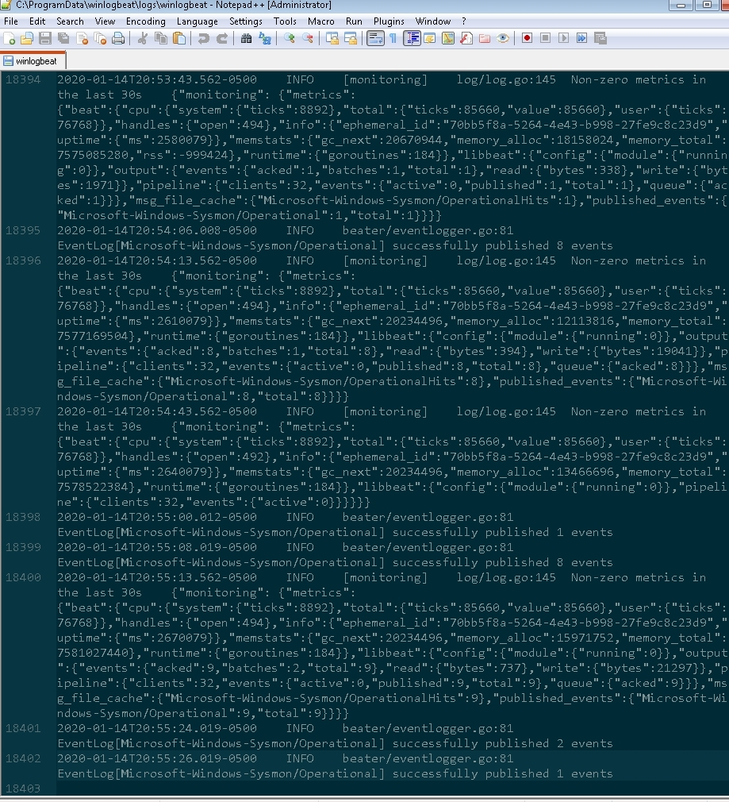

If you believe logs are not being sent to HELK from winlogbeat then there are a couple of things that could be going on. For this document we will stick to looking at only winlogbeat itself. If your logs contain what is shown below then winlogbeat is shipping/sending the logs properly and therefore could be an issue somewhere else and thus you should consult the wiki for additional resources.
Installed as a Service
If winlogbeat is installed as a service then the logs will be located within:
%PROGRAMDATA%\winlogbeat\logs\winlogbeatManually Running the Executable
If you are manually running winlogbeat then the logs will be within the directory you are running winlogbeat.exe at the path
.\logs\winlogbeatViewing Logs
To view the logs you can simply use notepad or notepad++ or use a powershell command such as
Get-Content C:\ProgramData\winlogbeat\logs\winlogbeat -Tail 10 -Wait
Log Output
Your logs should contain information with the verbiage successfully published #NUMBER events, similar to the output shown below
